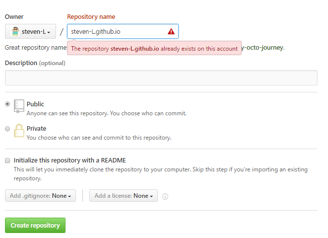

github pages 可以给每位用户提供一个静态化的网站部署
https://pages.github.com/
4.1 创建仓库
仓库名称为 [username].github.io username为你的账号显示名称
[username].github.io

点击按钮，创建完成。
4.2 提交代码
在本地clone仓库，把网站代码提交
4.3 查看网站
访问http://[username].github.io